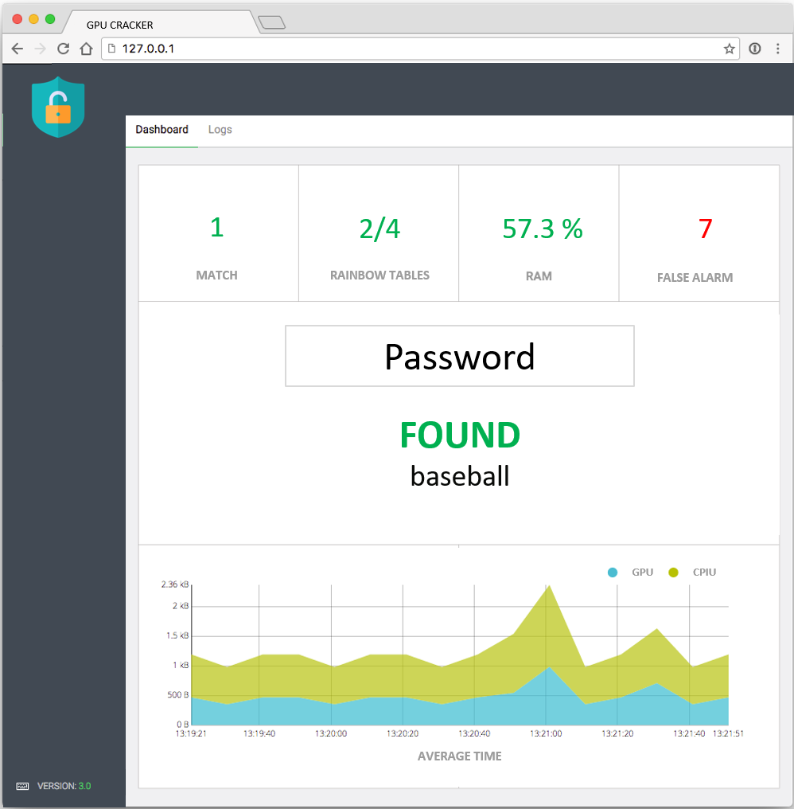

Comment ça marche ?
Le logiciel phase offline
L’application s’utilise en ligne de commande et est paramétrable, afin de gérer le nombre de chaînes et le nombre de tables. Cette application a pour but d’être exécuté sur un cluster comme Grid’5000. Grid’5000 est un réseau de machines dédié au calcul distribué et aux expérimentations.
./generateTable c mt (startpath) (endpath)- c est la longueur d'un mot de passe (en caractères)
- mt est le nombre de endpoints dans la table (50 000 000 par exemple)
- (optional) startpath est le chemin d'accès au fichier de points de départ à créer
- (optional) endpath est le chemin d'accès au fichier de points d'extrémité à créer
Cela créera deux fichiers distincts aux chemins spécifiés. Ces fichiers contiennent les startpoints et les endpoints filtrés.
Le logiciel phase online
L'utilisateur entre un ou plusieurs hash mots de passe, et l'interface va exécuter le logiciel phase oline dans le but de retrouver le mot de passe qui correspond. Voici un aperçu :

